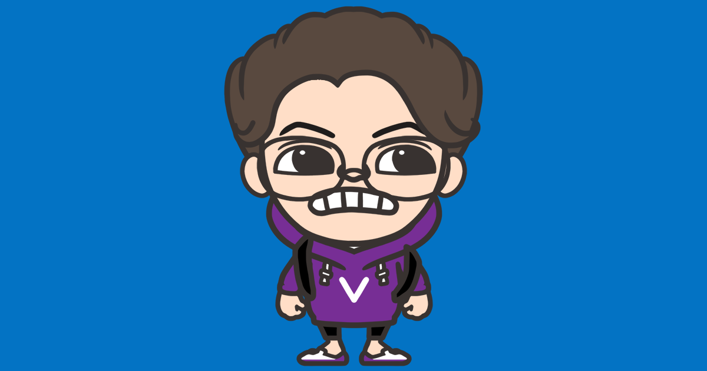

✅

문성혁입니다. Roeniss Moon이라는 이름도 쓰고 있습니다. 소프트웨어 개발자입니다.
활동
단체 활동들은,
IT 교육 동아리 멋쟁이사자처럼 (2017/02 ~ 2017/08) :
아주대학교 멋사 5기 멤버로서, Ruby를 통해 프로그래밍을 처음 접했습니다.
서강대학교 컴퓨터 중앙동아리
SGCC (Sogang Computer Club,
2018/09 ~ ) : 동아리원으로서
웹 프로그래밍 맛보기 대작전 1편
오프라인 강의를 진행하고, 동아리원들을 대상으로 하는 파이썬 스터디를 리드했습니다. 또한 교내
학생들을 대상으로
원데이 FUN 파이썬
특강을 진행했습니다.
AWS 대학생 동아리 AUSG (AWSKRUG University
Student Group, 2019/08 ~ ) : 3기 오거나이저로서,
초보자를 위한 AWS 뿌시기를 진행하고, 정기적으로 3기 멤버들과의 만남을 가지고 있습니다.
웹 프로젝트들은,
카페 자리 바톤터치 앱 릴레잇 (2020/02 ~ ) :
세 명의 멤버와 한 명의 멘토로 구성되었으며, 백엔드를 맡아 개발하고 있습니다.
ExpressJS, MySQL & Sequelize,
Typescript
학교 주변 맛집 지도
맛동요 :: 맛게살의 동선 요기있네! (2019/12 ~ ) :
서강대학교의 네임드 맛집 리뷰어 "맛게살"님에게 '당신의 맛집 리뷰들을 하나하나 읽는 것도
좋지만 지도 형태로 볼 수 있으면 실제 맛집을 방문할 때 도움이 많이 될 것이다'라고 설득한
결과로 만들어진 웹사이트입니다. React,
S3, Amazon CF,
Naver Map SDK
서강대학교 동아리 홍보 플랫폼
서동요 :: 서강대 동아리 요기있소! (2017/08 ~ ) : 각
동아리가 자신들을 홍보할 수 있는 공식적인, 공동의 장이 부족하다고 판단하여 본 플랫폼을
만들게 되었습니다. 최초 버전은 2017년 2학기 개강 직전에 만들어 배포하였고, 이후 2018년 8월
조금 더 UI와 기능을 다듬어 현재와 같은 모습을 하게 되었습니다.
django, uwsgi,
nginx, sqlite3,
AWS EC2
온라인 취미 플랫폼 마이비스킷 : 팀블라인드에서
비스킷 팀 소속으로서, 플랫폼 1차 개발 중 백엔드 파트를 담당하였습니다.
AWS EC2, ELB,Amazon S3, Amazon CF,Amazon RDS,
Amazon Route 53,
payment module (Nicepay),
Video CDN, Social Login
AD 퍼포먼스 에이전시 퀀텀파이러츠 (2017/10 ~
2018/03) : 자동차 수리 체인점
작스모터스 홈페이지의 유지보수를 담당하고, 사내
광고 분석 플랫폼의 데이터 파이프라인 아키텍쳐를 구축했습니다.
php, WordPress,
AWS Lambda, Amazon API Gateway,
Google Analytics
머신러닝 기반의 여행지 추천 서비스
Trip Picker (2019/09 ~ 2019/12) : 캡스톤
프로젝트로서, 프론트와 머신러닝 연동 작업을 맡았습니다. 한국관광공사 Tour API를
사용했습니다. python. AWS Lambda,
React
피자 체인점 Yellow Pizza (2019/01 ~ 2019/03) :
옐로우 피자 본사에서 컨택을 받아 웹 홈페이지 외주 업무를 진행했습니다.
React, AWS EC2
웹 이외의 프로젝트들은,
유니티 기반 플랫포머
Detached (2019/12 ~ ) : 세
명의 멤버로 구성된 Team NearFuture를 만들어, "팔다리가 분리되는 로봇"이라는 컨셉으로 게임을
제작하고 있습니다. Unity
JS conf Korea 2019의 웹사이트 변화를 감지하는 스크립트
PageChangeCheck-for-2019.jsconfkorea
(2019/03) : JS conf Korea 홈페이지에서 티켓 판매 전, "티켓 판매 개시를 별도 고지할 계획이
없다"는 대답을 확인했습니다. 그래서 티켓이 품절되서 못가는 일이 없도록 본 스크립트와 cron을
사용해서 사이트 변화를 감지하고, 특이사항이 발생할 시 제 메일로 알림을 보냈습니다. JS conf
Korea 측에서는 이 스크립트를 감사해하며 티켓을 저에게 보내주었습니다.
Puppetter, Web Crawling
그 외에,
티스토리 블로그 (2019/08 ~) : 프로그래밍 관련
글을 써 나가고 있습니다.
삼성 상시 SW역량테스트 A형 (2019/09) :
LevelA를 획득했습니다.